Una tarjeta con la portadaA card with the cover art
Sin menús ni barra de título. La portada, el tema y los controles, y nada más.No menus, no title bar. The cover, the track and the controls, nothing else.
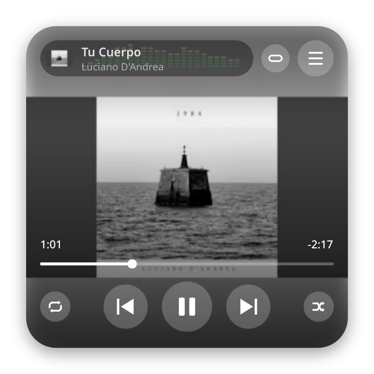
Un reproductor de mp3 sin internet, sin cuentas y sin avisos. Gratis y de código abierto, para Linux y Windows.An mp3 player with no internet, no accounts and no notifications. Free, open source, for Linux and Windows.
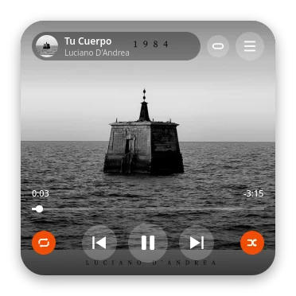
tarab player (antes simpleplay) nació de una idea simple y de tener gigas de música guardados: abrir esa carpeta y escuchar. Sin iniciar sesión, y sin que nadie me ofrezca otra cosa mientras suena.
tarab player (formerly simpleplay) started from a simple idea and from having gigabytes of music stored away: open that folder and listen. No sign-in, and nobody offering me something else while it plays.
La primera versión fue un script en Tkinter, con una lista gris y unos pocos botones. Funcionaba. Después le di la forma que quería: una tarjeta con la portada, unas barras de espectro que son un guiño a Winamp y una lista que se abre solo cuando la necesito.
The first version was a Tkinter script with a grey list and a few buttons. It worked. Then I gave it the shape I wanted: a card with the cover art, spectrum bars as a nod to Winamp, and a list that opens only when I need it.
Lo publiqué el 18 de octubre de 2026 y desde entonces fue creciendo con lo que yo mismo le fui pidiendo.
I published it on October 18, 2026, and it has kept growing with whatever I asked of it myself.
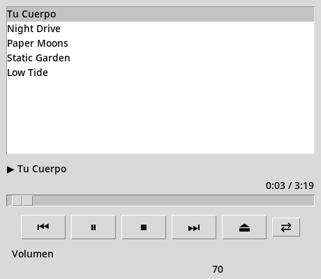
Reproduce los mp3 que ya tenés. Todo lo demás está pensado para que no te estorbe.It plays the mp3s you already have. Everything else is there to stay out of your way.
Sin menús ni barra de título. La portada, el tema y los controles, y nada más.No menus, no title bar. The cover, the track and the controls, nothing else.

Mientras suena, si dejás quieto el mouse, los controles se desvanecen y queda solo la portada. Lo movés y vuelven.While a track plays, if you leave the mouse still, the controls fade away and only the cover is left. Move it and they come back.
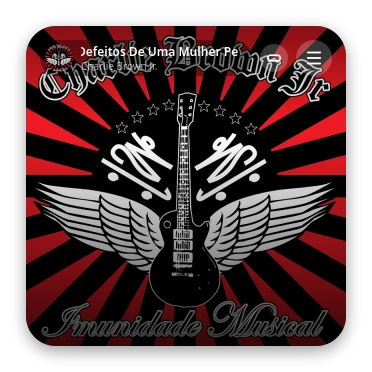
El espectro estilo Winamp lee el audio que sale por tus parlantes, cuadro por cuadro.The Winamp-style spectrum reads the audio going to your speakers, frame by frame.
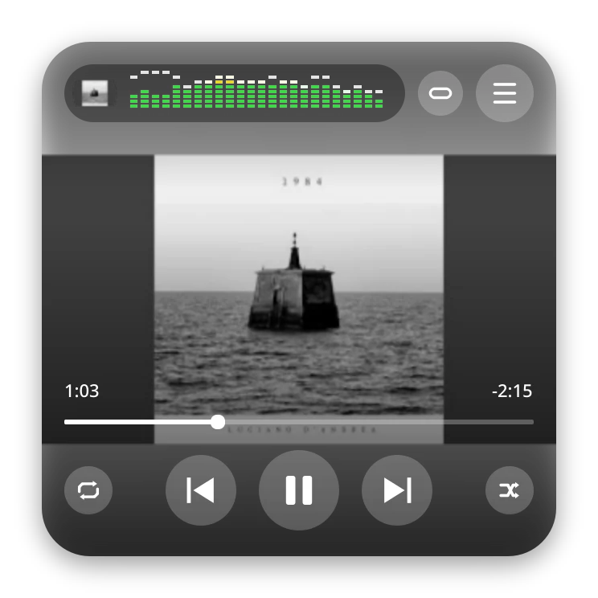
Una transición suave pasa de la tarjeta a una barra compacta. La música no se corta.A smooth transition turns the card into a compact bar. The music keeps playing.
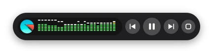
Buscá, ordená, arrastrá y agregá carpetas enteras. Un panel de música y listas guarda tus carpetas y tus listas para reemplazar o sumar con un toque, y vaciar la lista sin pelearte con la selección.Search, sort, drag, and add whole folders. A music and playlists panel keeps your folders and saved lists for replacing or adding with one tap, and for emptying the list without fighting the selection.
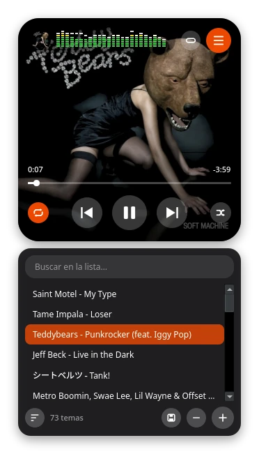
Diez bandas de 31 Hz a 16 kHz con ±12 dB, o cinco bandas paramétricas con su frecuencia, ganancia y ancho propios. Se abre al costado y suena mientras movés los controles. Partí de un preset, guardá los tuyos o buscá tu sonido en tres rondas.Ten bands from 31 Hz to 16 kHz with ±12 dB, or five parametric bands with their own frequency, gain and width. It opens beside the player and sounds as you move the controls. Start from a preset, save your own or find your sound in three rounds.
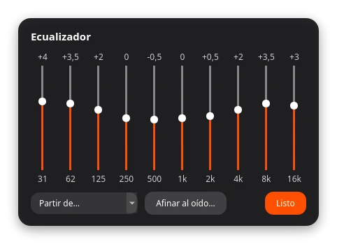
Pausar y saltar sin clics. Saltar al minuto 58 de un mix pasó de tardar un segundo y medio a una fracción de milisegundo.Pause and seek with no clicks. Jumping to minute 58 of a mix went from taking a second and a half to a fraction of a millisecond.
Medido en un mp3 de 60 minutos.Measured on a 60-minute mp3.
Guardalas y abrilas como archivos M3U8 comunes, que también leen VLC o mpv. Clic derecho en un tema para agregarlo a una lista o crear una nueva. Si movés la carpeta con la música, la lista sigue funcionando.Save and open them as plain M3U8 files, which VLC or mpv read too. Right click a track to add it to a list or start a new one. Move the music folder and the list keeps working.
Rutas relativas: la lista viaja con la música.Relative paths: the list travels with the music.
Con etiquetas, portada y ReplayGain, y búsqueda dentro del tema. Probado hasta 24 bits y 96 kHz.With tags, cover art and ReplayGain, and seeking inside the track. Tested up to 24-bit and 96 kHz.
24 bits, 96 kHz.24-bit, 96 kHz.
Un normalizador para que todos los temas suenen parejos, un ecualizador con presets, crossfeed y balance para auriculares, y la base AutoEq para corregir los tuyos. El perfil se baja una vez y después funciona sin internet.A normalizer so every track sounds even, an equalizer with presets, crossfeed and balance for headphones, and the AutoEq database to correct yours. A profile is downloaded once and then works offline.
modelos de auriculares.headphone models.
Cada tema llega con su arte, y la tarjeta lo muestra grande. Pasan solas; tocá una para elegirla.Every track brings its artwork, and the card shows it big. They move on their own; tap one to pick it.
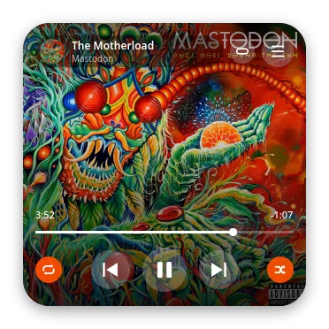
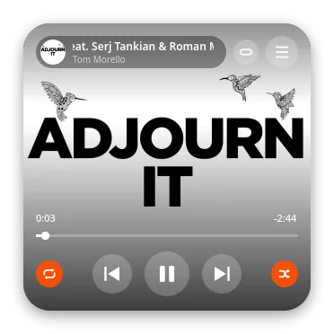
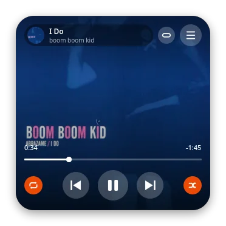
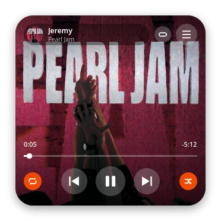
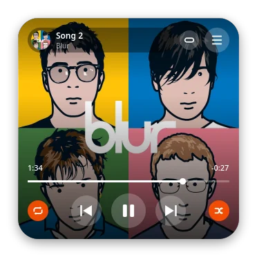
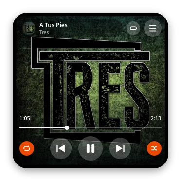
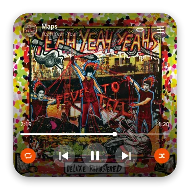
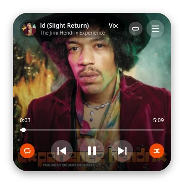
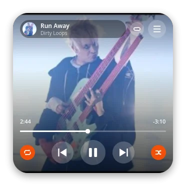
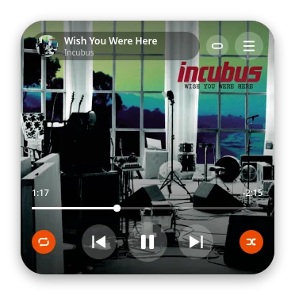
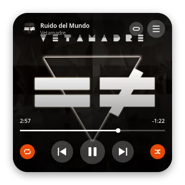
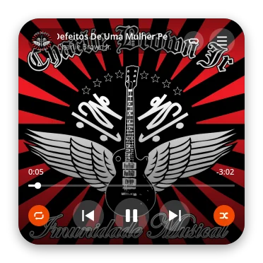
Escuchás dos versiones al mismo volumen, sin saber cuál es cuál, y elegís la que te gusta. Con pocas comparaciones, tarab player arma tu curva. O partí de uno de seis ajustes y un normalizador que iguala todos los temas.You hear two versions at the same loudness, without knowing which is which, and pick the one you like. In a few comparisons, tarab player builds your curve. Or start from one of six settings, with a normalizer that evens out every track.
Además, una base de perfiles para corregir unos ~800 modelos de auriculares: se baja una vez y después funciona sin internet.Plus a library of profiles to correct about 800 headphone models: you download one once and it works offline afterwards.
Todo lo importante tiene su tecla. Probalas acá: se iluminan al apretarlas. Aquí no suena nada, el reproductor responde a las mismas teclas.Everything important has a key. Try them here: they light up when you press them. Nothing plays on this page, the player answers to the same keys.
ReproducciónPlayback
La lista y másThe list and more
Quiero llevar esta idea a un reproductor físico: un mp3 chico, con tus archivos en una tarjeta de memoria y una sola tarea. Sin nadie que decida qué escuchás después.
I want to bring this idea to a physical player: a small mp3 player with your files on a memory card and a single job. Nobody deciding what you hear next.
La conectividad de hoy inunda y sofoca. Este sería un lugar donde no entra.
Today's connectivity floods and suffocates. This would be a place it does not reach.
Hoy está en construcción, sobre un microcontrolador ESP32. Cuando haya algo para mostrar, lo voy a contar acá.It is under construction on an ESP32 microcontroller. When there is something to show, I will post it here.
Versión 1.8.1. Gratis y sin registro.Version 1.8.1. Free, no sign-up.
Descargalo, dale permiso de ejecución y abrilo. Necesita glibc 2.35 o más nuevo (Ubuntu 22.04, Debian 12 o posteriores).
Download it, make it executable and run it. It needs glibc 2.35 or newer (Ubuntu 22.04, Debian 12 or later).
chmod +x simpleplay-1.8.1-x86_64.AppImage
Descomprimí y abrí simpleplay.exe. Como no está firmado, Windows va a avisar: tocá Más información y Ejecutar de todas formas. Todavía lo probé en pocas PC: si algo falla, avisame.
Unzip it and open simpleplay.exe. It is not signed, so Windows will warn you: click More info, then Run anyway. I have tried it on few PCs so far: if something fails, let me know.
Hay un DMG para Apple Silicon (M1 y posteriores) y otro para Intel. No está firmado por Apple: la primera vez macOS avisa, y se abre desde Ajustes del Sistema > Privacidad y seguridad > Abrir igualmente. Lo probé muy poco en una Mac real: si algo falla, avisame.
There is a DMG for Apple Silicon (M1 and later) and another for Intel. It is not signed by Apple: the first time macOS will warn you, and you open it from System Settings > Privacy & Security > Open Anyway. I have tried it very little on a real Mac: if something fails, let me know.
Descargar la versión para IntelDownload the Intel versiontarab player es software libre (GPL-3.0). El código está en GitHub: leelo, probalo o abrí un issue si algo no funciona. Si te sirve y querés darme una mano para seguir, podés invitarme algo. Es opcional.
tarab player is free software (GPL-3.0). The code is on GitHub: read it, try it, or open an issue if something breaks. If it is useful to you and you want to help me keep going, you can buy me something. It is entirely optional.
Gratis, sin registro y sin internet. Versión 1.8.1.Free, no sign-up and no internet needed. Version 1.8.1.